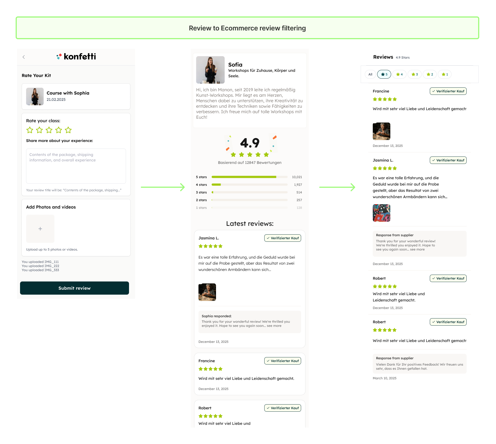

May 2024
Photos, videos and partner replies
After the deploy in August 2022, we understood text alone couldn't fix events with weak visuals or vague descriptions, so the next release added a simpler upload split by product type, photo-first, plus a review gallery and public replies from partners.
No profile photo neededPhotos + videoGalleryPartner replies
